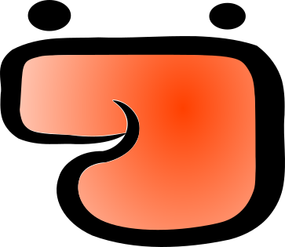
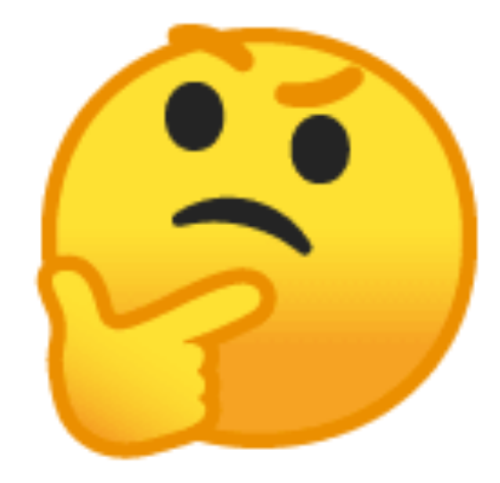
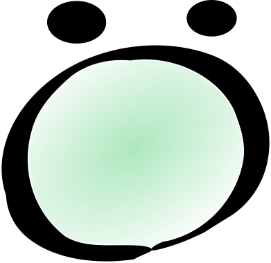
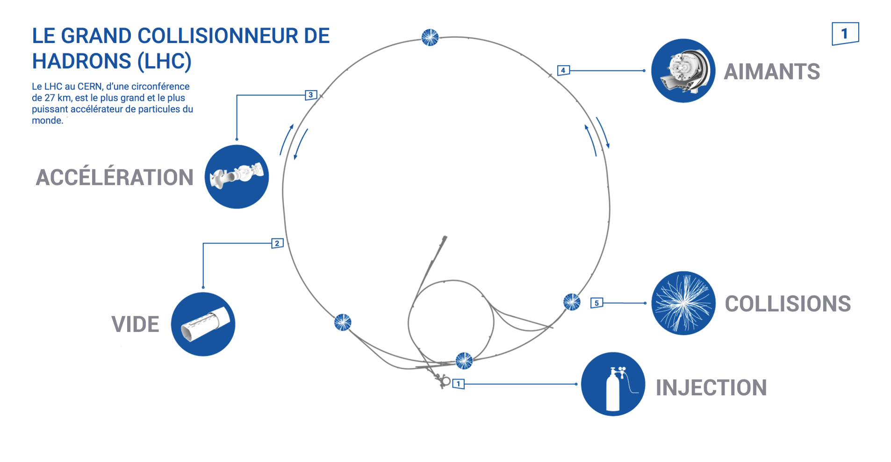
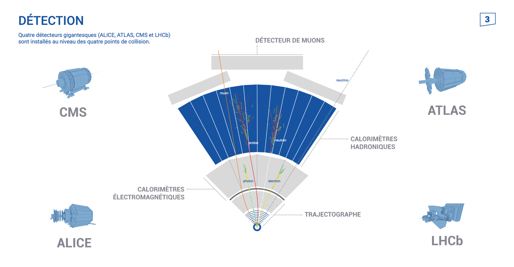

Nehmt Platz. üòÉ
Es geht gleich los.
Der Detektor,
das bist DU !
Wer bist du?
Aus was bist du gemacht?
Aus was bist du gemacht?
Aus Teilchen!
Aus Teilchen!
Teilchen sind winzige Stücke von Materie, aus denen sich alles in unserem Universum zusammensetzt.

Alles besteht aus Teilchen!
Alles besteht aus Teilchen!
Sogar Ketchup!

Alles besteht aus Teilchen!
Auch der Regen!

Alles besteht aus Teilchen!
Sogar die Sterne!

Wie LEGO-Steinchen
Wie LEGO-Steinchen
- Es gibt verschiedene Arten von Teilchen.
- Manche sind langsam, üê¢andere bewegen sich sehr schnell. üêá
- Manche sind schwer, üèãÔ∏èandere haben überhaupt gar keine Masse. ‚ú®
- Manche haben eine positive ➕oder negative ➖ elektrische Landung.
Wie findet man solche Teilchen?
Wie findet man solche Teilchen?
- Man kann sie ja nicht sehen...
- Weder hören, noch anfassen, schmecken, oder riechen...
- Man muss sie detektieren!
- Mit einer Maschine: einem Detektor.
- Detektieren heißt beobachten von Zeichen, die die Existenz von etwas beweisen.
Wie findet man solche Teilchen?
Wie wenn man Tierfährten beobachtet...

Wie findet man solche Teilchen ?
Wir haben alle zumindest einen Detektor zuhause!

Eine Nachricht vom Teilchenfanclub:
Kein Teilchen wird während des Workshops verletzt!
Elektron vs. Proton


Elektron vs. Proton
Es ist klein und leicht.
Durch seine Bewegung fliesst elektischer Strom.
Es ermöglicht den Betrieb von elektronischen Geräten.
Es hat eine negative ➖ Ladung.
Elektron vs. Proton
Es ist gross und schwer.
Es wird genutzt, um manche Krebsarten zu behandeln.
Es hat eine positive ➕ Ladung.
Detektieren eines geladenen Teichens

Detektieren eines geladenen Teichens

Detektieren eines geladenen Teichens

Photon vs. Neutron

Photon vs. Neutron
Es ist klein, leicht und immer in Bewegung.
Dank ihm sehen wir Licht.
Es hat keine elektrische Ladung.
Photon vs. Neutron
Es ist gross und schwer.
Es hilft, nukleare Energie zu erzeugen.
Es hat keine elektrische Ladung.
Wie detektiert man dieseTeilchen ohne Ladung?

Die Masse eines Teilchens bestimmen
Man benutzt ein Kalorimeter-Detektor.

Materie und Antimaterie
- Kurz nach dem Urknall bestand das Universum aus Materie und Antimaterie. ☯️
- Aber wenn Materie und Antimaterie aufeinandertreffen, verschwinden sie. üí•
- Heute ist die gesamte Antimaterie verschwunden.
- Man kann Antimaterie neu erzeugen, wie es hier am CERN geschieht, aber sie hat eine sehr kurze Lebensdauer. üíî
Positron und Antiproton


Positron & Antiproton
Es ist das Antiteilchen des Elektrons.
Es hat eine positive ➕ Ladung.
Positron & Antiproton
Es ist das Antiteilchen des Protons.
Es hat eine negative ➖ Ladung.
Und am CERN?
Und am CERN?
Und am CERN?

Und am CERN?
Zusammenfassung
Zusammenfassung

Die Geheimnissvollen Teilchen
Nachspann
Autoren
- Maria Alandes Pradillo
- Elisabeth Blazianu
- Brice Copy
- Sascha Melhase
- Lucas Van Mol
- Gernot Werner Scheerer
- Ralf Erik Rossel
Bild-Referenzen
- Atom Diagramm: Atom Diagram by Alexander Panosovsky from the Noun Project
- BBC Micro Bit: BBC Micro Bit by fredley from the Noun Project
- Ketchup Gesicht: https://linktr.ee/wuestenigel
- Rauchmelder, Legosteine, Blitze, Regen, Sterne: Wikimedia Commons
Bild-Referenzen
- Person: person by Alice Design from the Noun Project
- Struktur der Materie: Jonathan Delrue
- Emojis Käse, Maus: UNICODE consortium
- Andere: CERN
Weitere Referenzen
- Thump, Accumulate, Intro and Outro sounds:
https://freesound.org - Fahrstuhlmusik: Jay_You
- Cheering: Halleck
- Food Market: VincePest11
- Explosion: milkmusic
- Matsch: Breviceps
- Tada Fanfare: plasterbrain
- LEGO® ist ein eingetragenes Warenzeichen der Lego A/S.